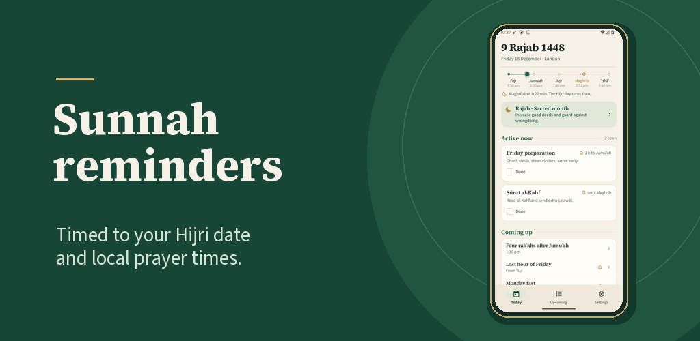
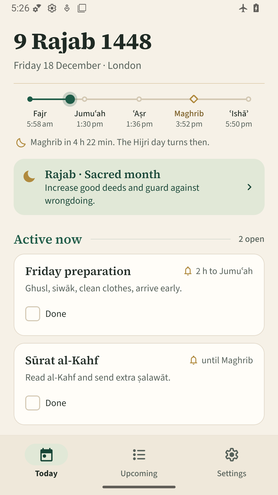
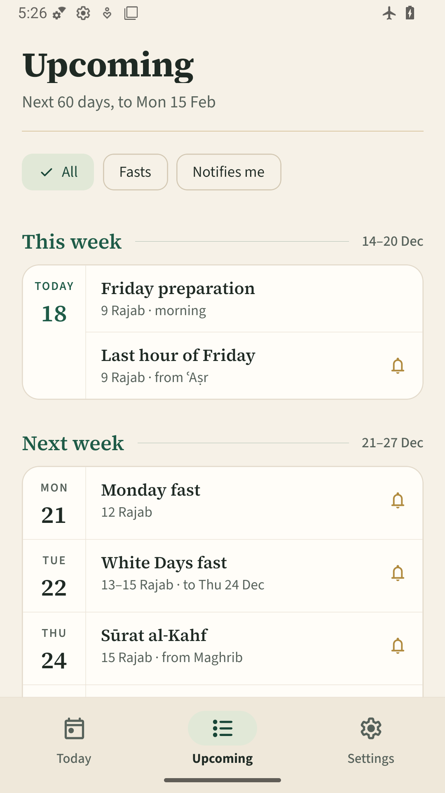
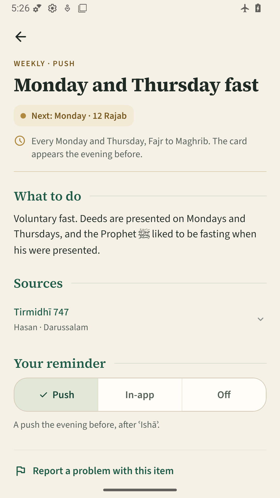
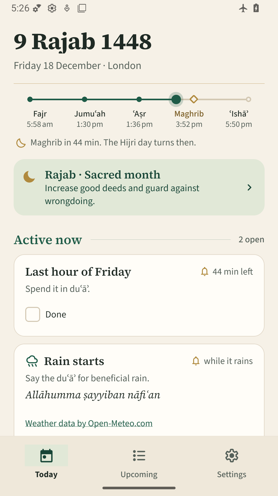

Adwam Google Play listing
App name
Adwam — Sunnah Reminders
Short description
Sunnah reminders timed to your Hijri date and local prayer times.
Full description
See which Sunnah practices are relevant today, with times for your city and the Hijri date you follow. Open an item for what to do, the timing and its sources.
Choose which reminders send a notification, appear only in Adwam or stay off. Set quiet hours and pause fasting reminders when you need to. Keep track of voluntary fasts and Ramadan make-up days on your phone.
Check the next 60 days in Upcoming. Adwam calculates calendar reminders on your phone, so they work offline after setup. Weather reminders and announced Hijri date corrections use an internet connection. You choose whether to apply a correction.
Choose a city or use approximate location. Adwam works without a sign-in screen and includes light and dark themes. Settings → Privacy lets you manage crash reports, optional usage statistics and server data.
Graphics and screenshots


These 1080 × 1920 review screenshots are from signed Preview build 11. Signed Preview · Google Play graphics requirements




Data safety answers for review
| Play Console category | Draft answer | Purpose and detail |
|---|---|---|
| Approximate location | Collected | Country and time zone support reminders and corrections. A rounded area is sent when weather reminders are on. Confirm how Play classifies the location derived from a chosen city. |
| Device or other IDs | Collected | Anonymous install ID, push token when available and a separate random analytics ID after consent. Confirm the final Firebase SDK configuration. |
| Crash logs and diagnostics | Collected when enabled | Sentry receives error stacks, build information and schedule counts to diagnose failures. Users can turn off reports. |
| App interactions | Optional analytics | PostHog receives approved interactions after opt-in. Reminder settings sent to Supabase serve app functionality. |
| Other personal information | Review | Use of a Sunnah app and reminder choices can indicate religious beliefs. Confirm the applicable disclosure and the consent approach. |
| Sharing | Review | Confirm which recipients qualify for Play's service-provider exception. Check Supabase, Expo, Firebase, Sentry, PostHog and Open-Meteo. |
| Encryption and deletion | Verify on the release build | Confirm hosted connections use HTTPS. In-app deletion removes reminder settings and push tokens. Confirm how users can request deletion from diagnostics and analytics services. |
Google Play Data safety form guidance
Content rating and app access
Suggested store category is Lifestyle. The app provides religious educational text and reminders. There is no in-app posting, chat, purchase, gambling or location sharing with other users. Source and problem-report links open external sites. Review the source text and translations against the live rating questionnaire.
Reviewers can choose a city, finish Setup and open Today and a Sunnah detail without credentials. The signed Preview targets Android 16 (API 36), the current minimum for a new Android phone app. Check the final release bundle again before submission. Google Play target API requirements